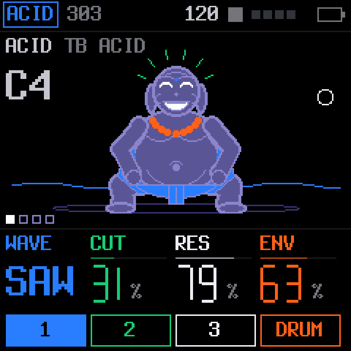
ACID or JUNO
303 voice from X0X · Juno voice from FM-106ACID is a TB-303 voice with accents and slides. JUNO is a Juno-106 style polysynth: DCO, an IR3109-style ladder filter and BBD chorus, up to six voices.
KARMA is free custom firmware for the M-VAVE FM-1. An acid bass or a Juno, physical modelling, two dozen synthesis models, a drum synthesizer, a 64-step sequencer and generators that keep writing while you play. It runs in your browser today.
Hardware testing starts this week, when the first FM-1 unit arrives. Until it passes, the installer stays closed. The browser simulator runs the same firmware and is open now.
The simulator runs the actual KARMA firmware on a drawn FM-1. Play it with your keyboard, plug in a MIDI controller, record a video of the screen with sound, and save your patterns to open later.
Open the simulator →A web installer flashes KARMA over USB from Chrome or Edge, with no tools to download. It opens once the firmware has been tested on real hardware. The same page will put the official firmware back.
Installer page (not available yet) →The web editor connects to the FM-1 over USB to edit sounds, sequences, songs, drum kits and settings, and saves your projects to files on the computer.
Open the editor →Every track plays at once from the same 64-step sequencer. Each one keeps its colour across the screens, the LEDs and this page.

ACID is a TB-303 voice with accents and slides. JUNO is a Juno-106 style polysynth: DCO, an IR3109-style ladder filter and BBD chorus, up to six voices.
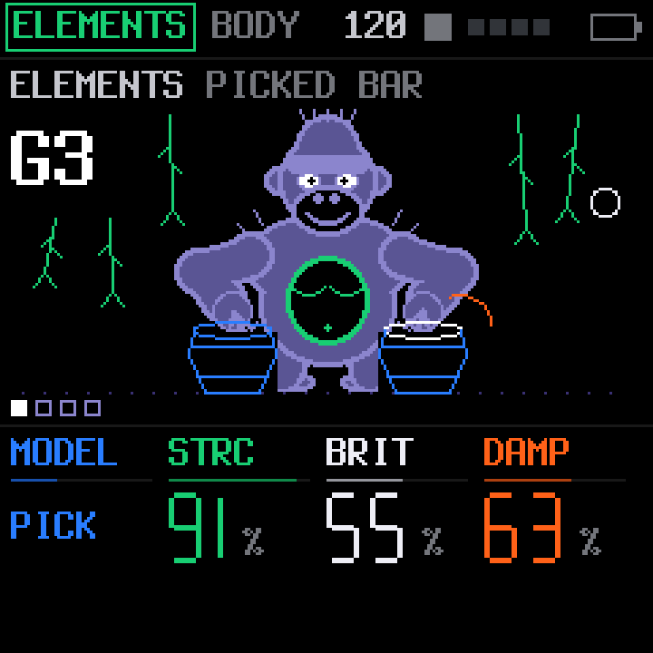
Physical modelling. Strike, pluck, bow or blow a modal resonator and shape its body. The Ominous Voice is in here too.
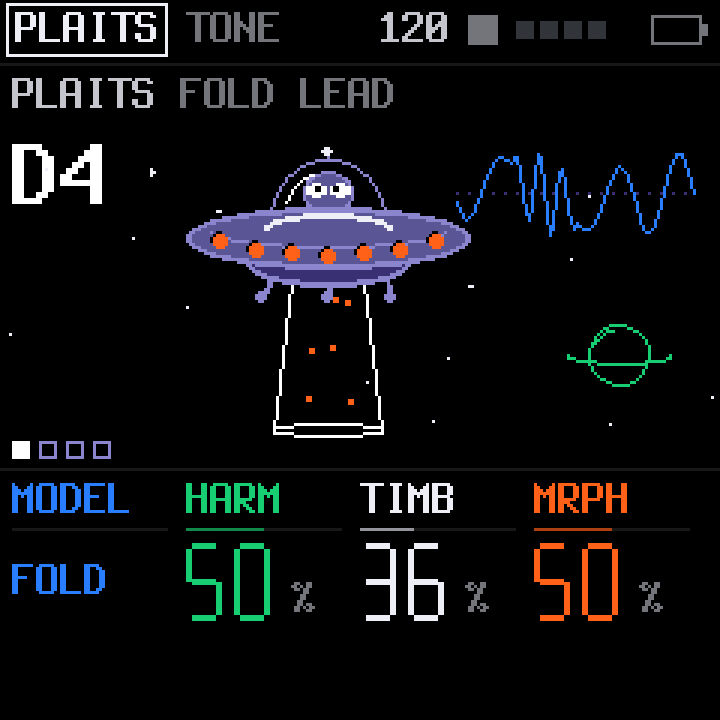
24 synthesis models: virtual analog, waveshaping, FM and 6-op FM, grain, wave terrain, string machine, chiptune, strings, modal, speech, particle and analog drums.
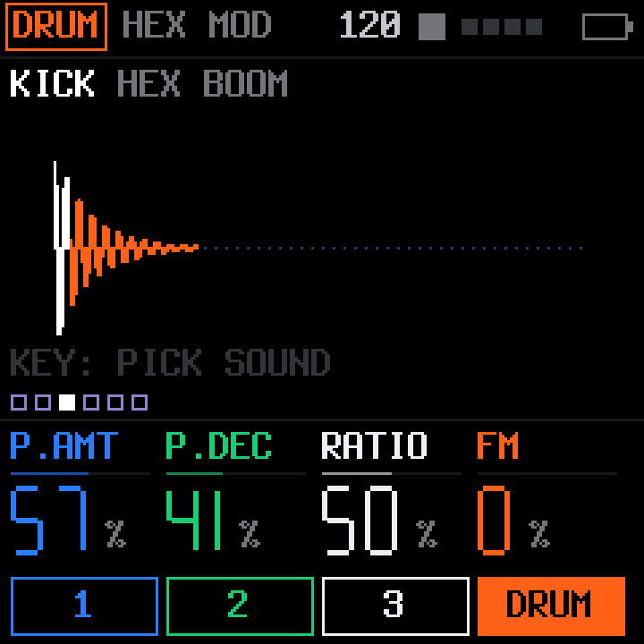
Kick, snare, clap, cymbal and hat models, synthesised as they play. Several kits ship with it, plus four user kits for your own.
The pixel art is drawn for KARMA, in the spirit of the OP-1's playful screens. The characters react to the notes you play. These are real screens, rendered from the firmware.
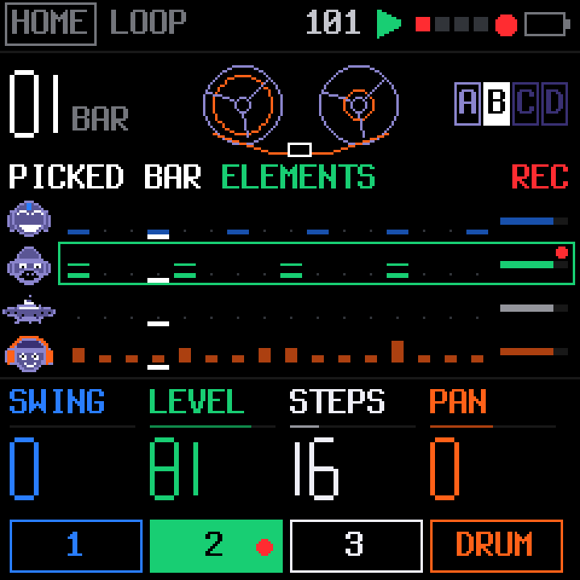
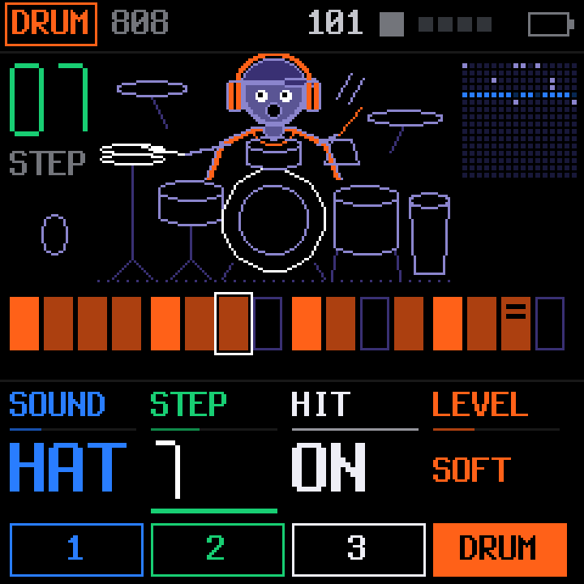
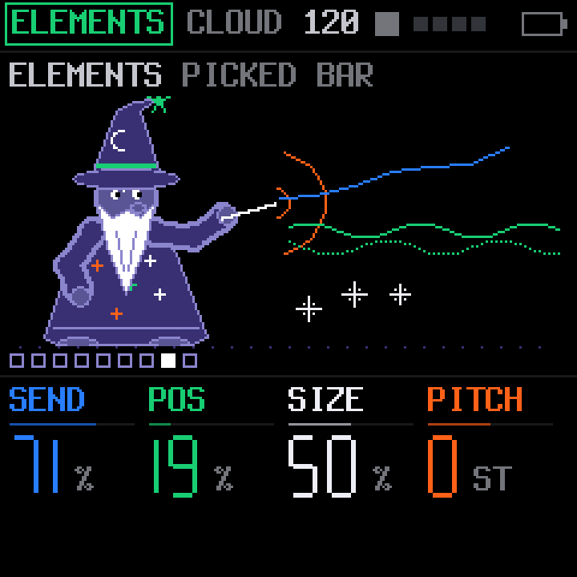
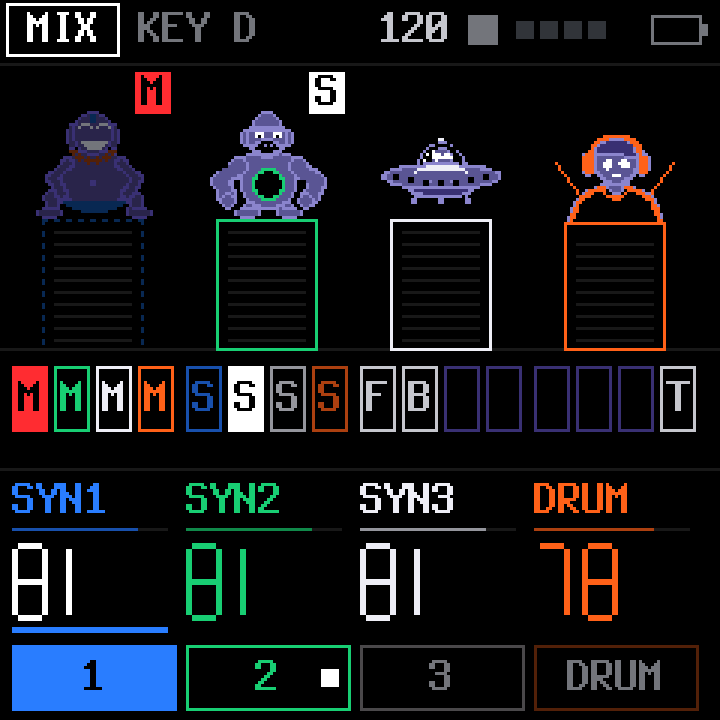
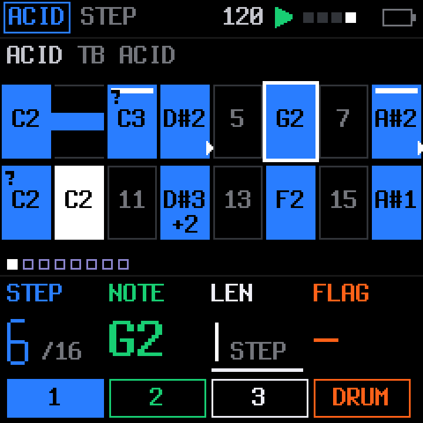
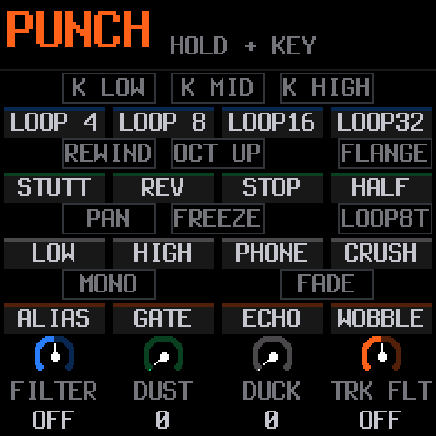
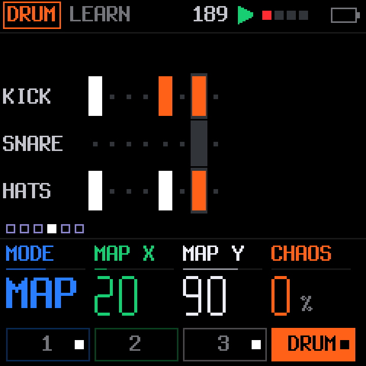
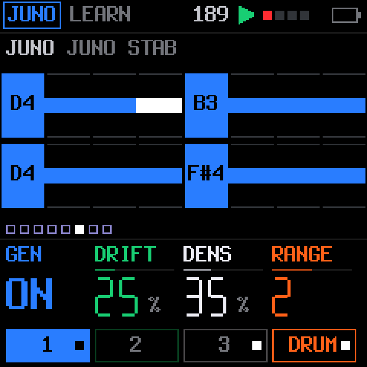
Yes. The installer will offer M-VAVE's official V15 firmware alongside KARMA, so going back is the same few clicks as going forward.
Chrome or Edge on a computer (the installer uses WebUSB, which other browsers do not offer), and a USB cable that carries data. Many cables that come with chargers only carry power, and the FM-1 will not show up with one of those.
Return to the official V15 firmware first, then install KARMA from there. Going from one custom firmware straight to another is not tested.
After hardware testing. The first FM-1 unit arrives in a few days, and the installer opens once KARMA has been checked on it. Until then, the browser simulator runs the same firmware.
No. KARMA is free and will stay free. It is licensed GPL-3.0-only, the source is public, and it is never for sale.
Yes. Over USB the FM-1 shows up as a class-compliant stereo audio interface at 44.1 or 48 kHz, and as a MIDI device. Separate stems per track are being built now.
KARMA is made by one person, Ariel Muchnik, in his own time. A coffee on Ko-fi goes into that time: testing on real hardware, new features and fixes. The firmware, the simulator and the editor stay free and open for everyone either way.
Ko-fi handles the payment. Nothing in KARMA asks you for money.
KARMA is made by Ariel Muchnik, with Claude. It stands on the code below; each part keeps its own licence.
| PROJECT | WHAT KARMA USES | LICENCE |
|---|---|---|
| Felucca | The firmware KARMA is based on, by Leo Kuroshita, Hügelton Instruments | GPL-3.0 |
| SLOOP | The Felucca fork KARMA grew from, by isod89 | GPL-3.0 |
| X0X | Charles Vestal's TB-303 voice (after Open303, MIT) and his port of TB-3PO from the Phazerville Hemisphere suite | GPL-3.0 |
| FM-106 | PatttF's Juno-106 voice, after ultramaster KR-106 | GPL-3.0 |
| Plaits, Elements, Clouds | Open-source code by Émilie Gillet for Mutable Instruments: the PLAITS models, the ELEMENTS exciters and Ominous Voice, the CLOUD granular effect | MIT |
| Grids | Émilie Gillet's drum maps, read by DRUM GEN | GPL-3.0 |
| JIANT FM | The idea of one chord plan for every generated part (and its pitch helpers), and the approach to USB stems, from Juan Jiant's FM-1 firmware | GPL-3.0 |
| DotGothic16 | The pixel font on this page's labels, by the DotGothic16 Project Authors | OFL-1.1 |
FREE FOREVER. NEVER FOR SALE.
KARMA is free software under the GNU General Public License, version 3 only. You may use, study, change and share it. If you pass on KARMA or firmware made from it, pass on its complete source under the same licence.
KARMA is not affiliated with or endorsed by M-VAVE, Mutable Instruments, Korg, Teenage Engineering, Hügelton Instruments or Juan Jiant. M-VAVE and FM-1 are trademarks of their owners. Mutable Instruments is a registered trademark; KARMA uses the open-source code of its modules and is not a Mutable Instruments product.